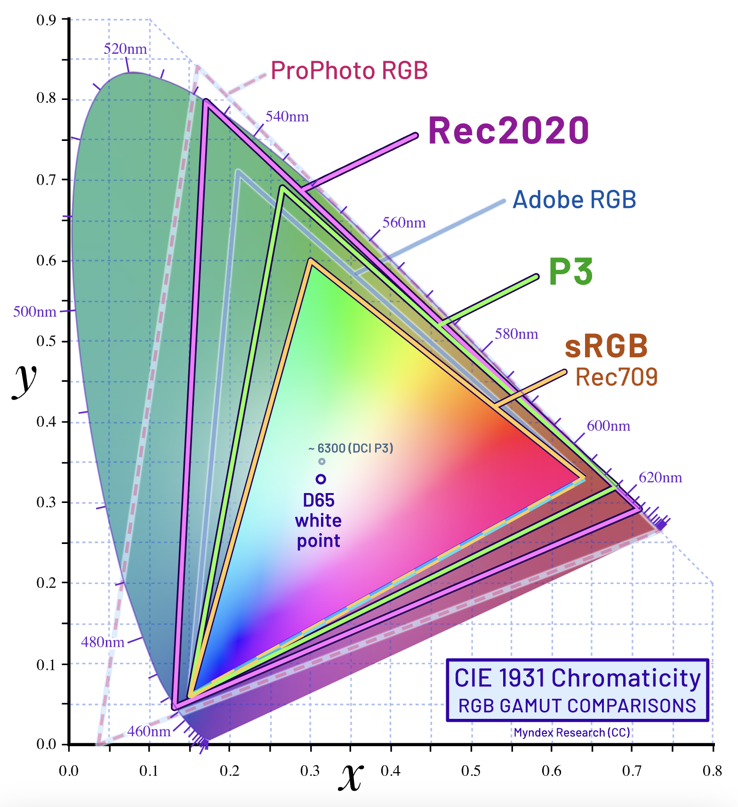
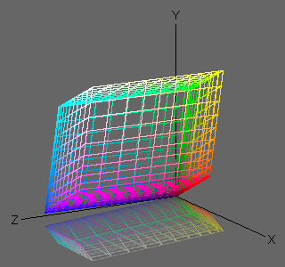
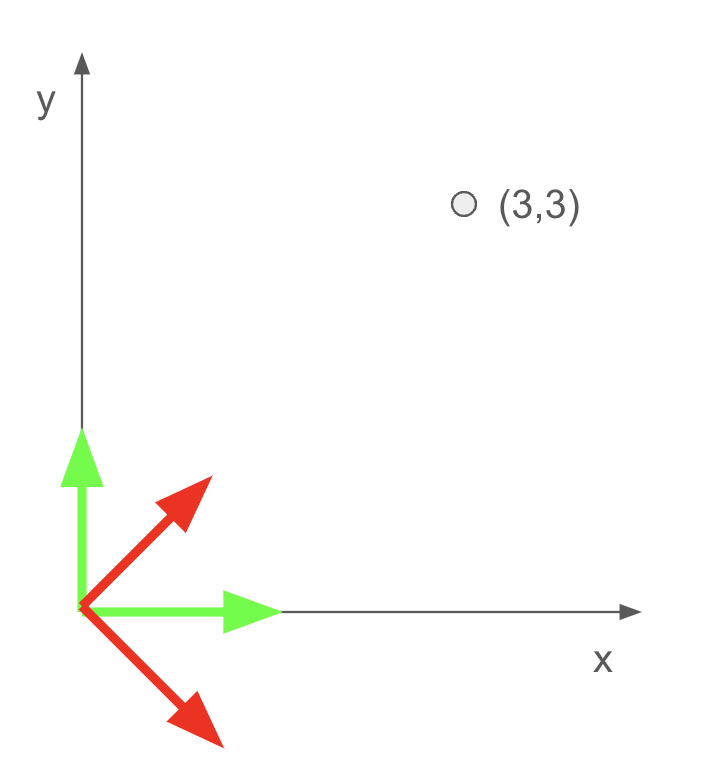
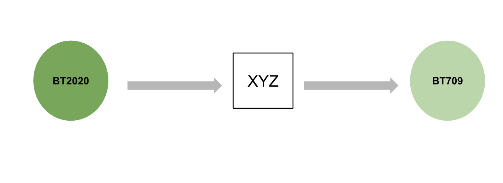

BT709 and BT2020
SDR and HDR, and more.
1. Introduction
HDR (High Dynamic Range) and SDR (Standard Dynamic Range) are two distinct methods of displaying video content, each utilizing different color spaces. HDR employs the BT.2020 color space standard, whereas SDR uses BT.709. Compared to BT.709, BT.2020 encompasses a significantly wider color gamut, as illustrated in the figure below. The BT.2020 color space can reproduce colors that BT.709 cannot.

Figure 1. CIE 1931
BT.2020 covers 75.8% of the colors in the CIE 1931 color space, while BT.709 covers 35.9%. The entire CIE 1931 color space represents all the colors that human eyes can perceive.
The wavelength of the BT2020 primary colors is 630 nm for the red primary color, 532 nm for the green primary color, and 467 nm for the blue primary color.
Here are some details regarding color primaries and white points for BT709 and BT2020 respectively.
| Color Space | White point | Primaries | |||||||
|---|---|---|---|---|---|---|---|---|---|
| Xw | Yw | Xr | Yr | Xg | Yg | Xb | Yb | ||
| BT709 | 0.3127 | 0.3290 | 0.64 | 0.33 | 0.30 | 0.60 | 0.15 | 0.06 | |
| BT2020 | 0.3127 | 0.3290 | 0.708 | 0.292 | 0.170 | 0.797 | 0.131 | 0.046 | |
Table 1.
2. XYZ Color Space
So far, we can see that the color range(gamut) that BT709(or BT2020) can represent is decided by the primaries and white points. If we project the color spaces in XYZ color space, we can get their corresponding irregular, polyhedral 3D shape objects.

It is important to understand the difference between xyz and XYZ coordinates. xyz is normalized and xy represents the chromaticity. XYZ is also called Tristimulus values. Y is the luminance, Z is quasi-equal to blue (of CIE RGB), and X is a mix of the three CIE RGB curves chosen to be nonnegative.
xyz is obtained by normalizing XYZ. And $x + y + z = 1$.
$$
\begin{equation}
\begin{cases}
x = \frac{X}{X+Y+Z} \\
y = \frac{Y}{X+Y+Z} \\
z = \frac{Z}{X+Y+Z}
\end{cases}
\end{equation}
$$
Then, we can have:
$ \begin{equation} \begin{cases} R_X = \frac{R_x}{R_y}*R_Y \\\\ R_Y = R_Y \\\\ R_Z = \frac{R_z}{R_y}*R_Y \end{cases} \end{equation} $ $ \begin{equation} \begin{cases} G_X = \frac{G_x}{G_y}*G_Y \\\\ G_Y = G_Y \\\\ G_Z = \frac{G_z}{G_y}*G_Y \end{cases} \end{equation} $ $ \begin{equation} \begin{cases} B_X = \frac{B_x}{B_y}*B_Y \\\\ B_Y = B_Y \\\\ B_Z = \frac{B_z}{B_y}*B_Y \end{cases} \end{equation} $ $ \begin{equation} \begin{cases} W_X = \frac{W_x}{W_y}*W_Y \\\\ W_Y = W_Y \\\\ W_Z = \frac{W_z}{W_y}*W_Y \end{cases} \end{equation} $
The white point is defined such that when red, green, and blue components are combined at their full intensities, they produce white. The tristimulus values of the white point $W_X, W_Y, W_Z$ are the sums of the individual contributions from the red, green, and blue components $R_X, G_X, B_X$.
$$
\begin{equation}
\begin{cases}
W_X = R_X + G_X + B_X \\
W_Y = R_Y + G_Y + B_Y \\
W_Z = R_Z + G_Z + B_Z
\end{cases}
\end{equation}
$$
Let’s combine these equations and we can get:
$$
\begin{equation}
\begin{cases}
\frac{W_x}{W_y} * W_Y = \frac{R_x}{R_y} * R_Y + \frac{G_x}{G_y} * G_Y + \frac{B_x}{B_y} * B_Y \\
W_Y = R_Y + G_Y + B_Y = 1 \\
\frac{W_z}{W_y} * W_Y = \frac{R_z}{R_y} * R_Y + \frac{G_z}{G_y} * G_Y + \frac{B_z}{B_y} * B_Y
\end{cases}
\end{equation}
$$
Because $R_{xyz}, G_{xyz}, B_{xyz}$ are given as primaries and $W_Y = 1$, we can solve these linear euqations and get $R_{XYZ}, G_{XYZ}, B_{XYZ}$. These form orthogonal basis for RGB in XYZ space.
$$
\begin{equation}
\left[\begin{array}{l}
X \\
Y \\
Z
\end{array}\right]=\left[\begin{array}{lll}
R_X & R_Y & R_Z \\
G_X & G_Y & G_Z \\
B_X & B_Y & B_Z
\end{array}\right]\left[\begin{array}{l}
R \\
G \\
B
\end{array}\right]
\end{equation}
$$
Let’s use a simple example to illusrate why $RGB_{XYZ}$ is the conversion matrix we need.

In this simplified case, the problem can be formulated as:
Given
- (1) Linear Space $O_1 = \{(1,0), (0,1)\}$
- (2) $P$ in $O_1$: (3,3)
- (3) $P$ in $O_2$: (0, $3\sqrt{2}$), $O_2$ is unknown.
Solve:
- Conversion matrix from $O_1$ to $O_2$.
The analogy here is: $P$ is the white points(and primaries) in $XYZ$ space, $O_1$ is the $XYZ$ color space and $O_2$ is the $RGB$ basis in $XYZ$ space. We also have additional information about $P$ coordinates with respect to $RGB$ basis.
We can easily compute $O_2$.
$$
O_2 = \{(\frac{1}{\sqrt{2}}, -\frac{1}{\sqrt{2}}), (\frac{1}{\sqrt{2}}, \frac{1}{\sqrt{2}})\}
$$
The conversion matrix is:
$$
\begin{equation}
\left[\begin{array}{l}
X^{\prime} \\
Y^{\prime}
\end{array}\right]=\left[\begin{array}{lll}
\frac{1}{\sqrt{2}} & -\frac{1}{\sqrt{2}} \\
\frac{1}{\sqrt{2}} & \frac{1}{\sqrt{2}}
\end{array}\right]\left[\begin{array}{l}
X \\
Y
\end{array}\right]
\end{equation}
$$
$O_2$ is exactly the conversion matrix that we need. So, the $RGB$ basis in $XYZ$ space $RGB_{XYZ}$ is our conversion matrix.
3. BT2020 to BT709
BT2020 and BT709 can be both projected into $XYZ$ space. The distinction is that they form different $RGB$ basis in $XYZ$ space. To convert between these two color spaces, we can utilize the $XYZ$ space as an intermediary. This involves calculating two conversion matrices, one for each color space, and then obtaining the final conversion matrix through matrix multiplication.

3.1 BT2020 to XYZ
According to Table 1, we have:
\begin{equation*} \begin{cases} R_x = 0.708 \\\\ R_y = 0.292 \\\\ R_z = 0.000 \\\\ \end{cases} \quad \begin{cases} G_x = 0.170 \\\\ G_y = 0.797 \\\\ G_z = 0.033 \\\\ \end{cases} \quad \begin{cases} B_x = 0.131 \\\\ B_y = 0.046 \\\\ B_z = 0.823 \\\\ \end{cases} \quad \begin{cases} W_x = 0.3127 \\\\ W_y = 0.3290 \\\\ W_z = 0.3583 \\\\ \end{cases} \end{equation*}
Substitue them to:
\begin{equation} \begin{cases} \frac{W_x}{W_y} * W_Y = \frac{R_x}{R_y} * R_Y + \frac{G_x}{G_y} * G_Y + \frac{B_x}{B_y} * B_Y \\\\ W_Y = R_Y + G_Y + B_Y = 1 \\\\ \frac{W_z}{W_y} * W_Y = \frac{R_z}{R_y} * R_Y + \frac{G_z}{G_y} * G_Y + \frac{B_z}{B_y} * B_Y \end{cases} \end{equation}
We can get $R_Y, G_Y, B_Y$. Then, solve the rest.
\begin{equation*} \begin{cases} R_X = \frac{0.708}{0.292} * R_Y \\\\ R_Y = R_Y \\\\ R_Z = \frac{0.000}{0.292} * R_Y \\\\ \end{cases} \quad \begin{cases} G_X = \frac{0.170}{0.797} * G_Y \\\\ G_Y = G_Y \\ G_Z = \frac{0.033}{0.797} * G_Y \\\\ \end{cases} \quad \begin{cases} B_X = \frac{0.131}{0.046} * B_Y \\\\ B_Y = B_y \\ B_Z = \frac{0.823}{0.046} * B_Y \\\\ \end{cases} \end{equation*}
The conversion matrix would be:
$$
\begin{equation}
\left[\begin{array}{l}
X \\
Y \\
Z
\end{array}\right]=\left[\begin{array}{lll}
0.636958 & 0.144617 & 0.168881 \\
0.262700 & 0.677998 & 0.059302 \\
0.000000 & 0.028073 & 1.060985
\end{array}\right]\left[\begin{array}{l}
R \\
G \\
B
\end{array}\right]
\end{equation}
$$
3.2 XYZ to BT709
Similar to BT2020 to XYZ, we can first compute the conversion matrix from BT709 to XYZ, then compute the inverse matrix. The inverse matrix is the matrix that we need to transform XYZ to BT709.
$$
\begin{equation}
\left[\begin{array}{l}
R \\
G \\
B
\end{array}\right]=\left[\begin{array}{lll}
3.240970 & −1.537383 & −0.498611 \\
−0.969244 & 1.875968 & 0.041555 \\
0.055630 & −0.203977 & 1.056972
\end{array}\right]\left[\begin{array}{l}
X \\
Y \\
Z
\end{array}\right]
\end{equation}
$$
3.3 BT2020 to BT709
$M_{BT2020->BT709} = M_{XYZ->BT709} * M_{BT2020->XYZ}$
$$
M_{BT2020->BT709} = \left[\begin{array}{lll}
1.660491 & −0.587641 & −0.072850 \\
−0.124550 & 1.132900 & −0.008349 \\
−0.018151 & −0.100579 & 1.118730
\end{array}\right]
$$
References
BT709 and BT2020